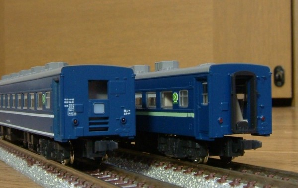
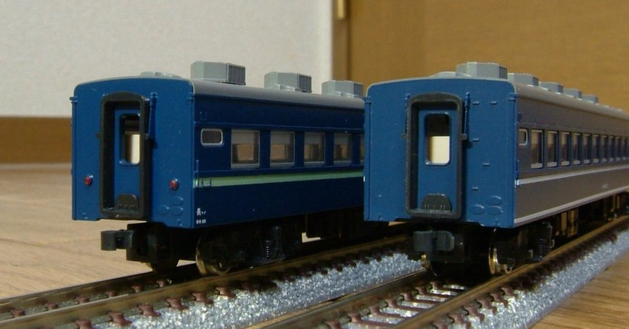
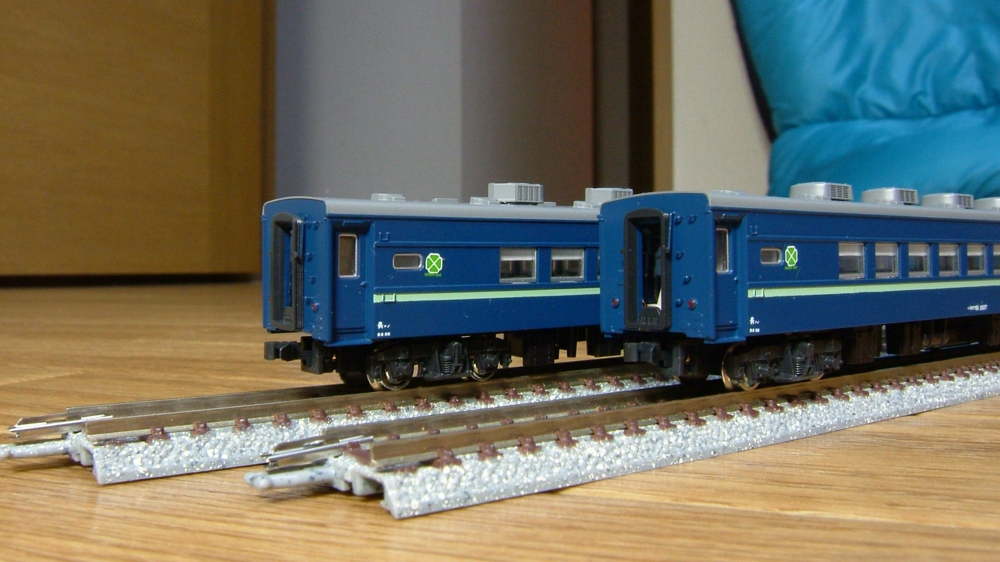
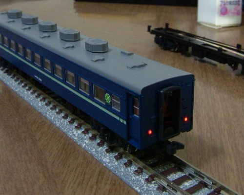
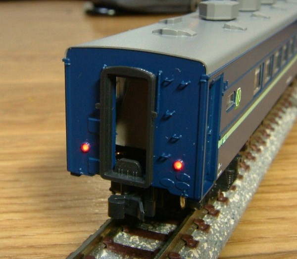

今回の改造はどこを改造したかわかります。なぜなら、色が変わっているから！
青15号・淡緑6号ともにモリタで、元の塗装を剥がした上で淡緑→青の順に塗装しています。
妻面はテールサインと配電盤を削り取り、貫通幌を設置しました。例によって手すりは植え込み化。 出目金&寄り目テールライトは削り取り、やや外側に銀河のパーツをつけなおしています。

非デッキ側妻面です。
資料が皆無だったため、スロフ62を参考に作りました。
余計なステップを削除して、テールライトを取り付けます。テールライトは、 汚物処理装置の点検蓋(?)を避けるために高い位置に設置されています。 点検蓋はスジ彫りで表現したいところでしたが、自信がなくて省略しました。

2両のスロフ81の並び。
KATOのスロフ81の客用扉は2113が両面ともに2段窓、2114が両面ともに1段下降窓になっていますが 間違いで、いずれも車掌室側が2段窓、反対側が1段下降窓になります。きっと 片面だけ見て反対側も同じに違いないとおもって作ったんだろうなぁ…
スロフ81 2107とスロ81 2116はクーラーを製品のAU13角型から AU13A(AU13Sで代用)に交換してあります。

テールライトユニットを自作しています。
チップLEDとチップ抵抗、エナメル線でまとめました。

例によって妻面の手すりは植え込み化しました。
もともと付いていない幌吊りは、 0.3ミリ真鍮線で製作。やや控えめな表現になっています。